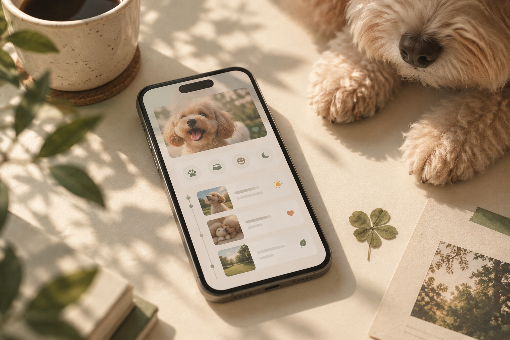
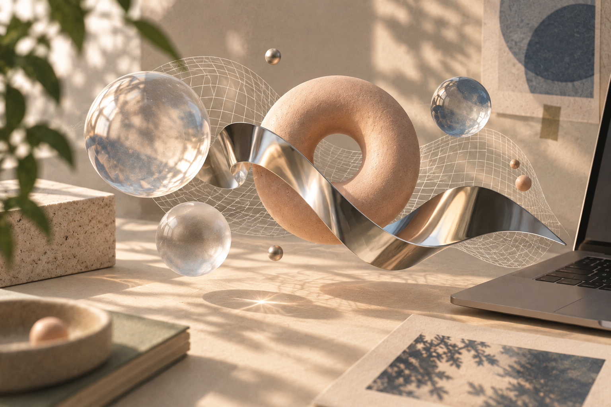
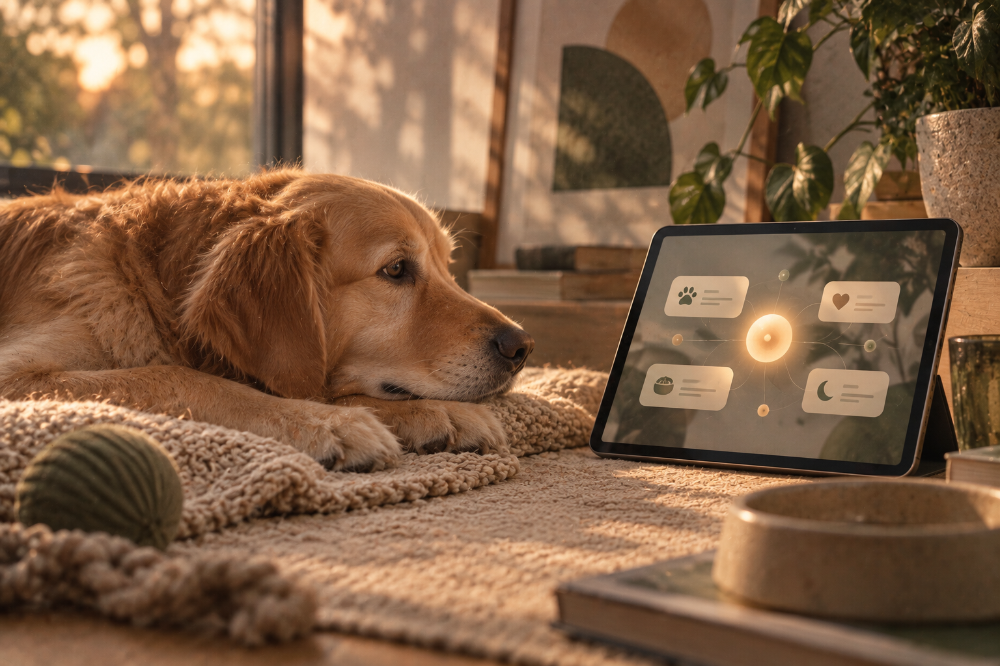

01DAENGS
반려견과의 일상을 더 오래 기억하기 위한 기록 서비스. 팀 프로젝트 — 홈·미니룸과 피부 해설 서브에이전트를 맡았다.
PORTFOLIO · 2026
A collection of things I've built,
learned, and explored thus far.
지금까지 만들고, 배우고,
탐험해 온 것들의 기록.
Here
I keep
my pieces.
Not just
projects,
but pieces
of me.
Four things I'm building,
one thread running through them.

01반려견과의 일상을 더 오래 기억하기 위한 기록 서비스. 팀 프로젝트 — 홈·미니룸과 피부 해설 서브에이전트를 맡았다.

02웹 위에서 형태와 움직임을 실험하는 인터랙티브 플레이그라운드.

03근거 RAG와 피부 스크리닝 모델을 MCP 서브에이전트로 부리는 반려견 상담 오케스트레이터. 모델이 말해도 되는 것을 코드가 정한다.
더 자연스럽고 쓸모 있는 대화를 만들기 위한 챗봇 실험.
STILL
BUILDING
GOOD
THINGS.
“ 아직 완성되지 않은 것에서도
좋은 가능성을 발견합니다. ”
작은 불편에서 질문을 찾고, 데이터와 AI,
웹 기술로 직접 작동하는 답을 만듭니다.